통신선로기능사 (2002-10-06 기출문제)
1과목: 전기전자개론
1. 아래 회로도에서의 저항 R2에 흐르는 전류의 세기 I2는 몇 [A]인가?
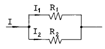
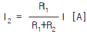
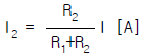
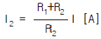
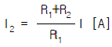
(정답률: 54%)

2. 기전력 2[V], 용량 10[AH]인 축전지 6개를 직렬로 연결하여 사용할 때 기전력은 12[V]가 된다. 이때 용량[AH]은?
- 10/6
- 10
- 60
- 120
(정답률: 38%)
3. 정현파 교류의 최대치와 실효치와의 관계는?
- 최대치 = 1/√2 × 실효치
- 최대치 = √2 × 실효치
- 최대치 = 2 × 실효치
- 최대치 = π/√2 × 실효치
(정답률: 53%)
4. 그림과 같은 직사각형의 코일에 아주 큰 전류를 흐르게 하면 코일의 모양은 어떻게 변하겠는가?
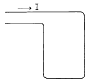
- 그대로 있다.
- 원모양으로 된다.
- 정사각형 모양으로 된다.
- 불규칙으로 운동하는 모양이 된다.
(정답률: 71%)
5. L[H]의 코일에 I[A]의 전류가 흐를때 축적되는 에너지 [J]는 ?
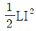
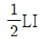
- LI2
- LI
(정답률: 44%)
6. 반지름 r[m],권수 N의 원형코일에 I[A]의 전류를 가했을 때 코일중심의 자장의 세기는 얼마인가?
- NIr[AT/m]
- 2NIr[AT/m]
- NI/r[AT/m]
- NI/(2r)[AT/m]
(정답률: 42%)
7. NPN형과 PNP형 트랜지스터의 전류의 반송자(CARRIER)에 관한 설명으로 틀린 것은?
- NPN형 반송자는 전자이다.
- PNP형의 반송자는 정공이다.
- NPN형의 반송자는 전하이다.
- PNP형의 반송자는 호울(HOLE)이다.
(정답률: 47%)
8. LC 발진회로에서 L = 200[μH], C = 200[㎊]이면 발진 주파수는 약 얼마인가?
- 70[㎑]
- 80[㎑]
- 700[㎑]
- 800[㎑]
(정답률: 64%)
9. 다음 회로에서 합성 인덕턴스는?
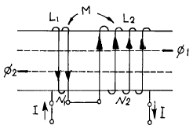
- L1 + L2 + 2M
- L1 + L2 - 2M
- L1 ÷ L2 ÷ 2M
- L1 × L2 × 2M
(정답률: 50%)
10. e = Em sin (wt + ψ)의 파형은 다음중 어느 것인가?
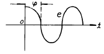
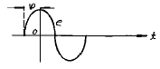
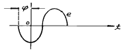
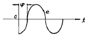
(정답률: 65%)
11. 전압 증폭도가 100배 및 1000배의 증폭기를 직렬로 접속했을때 전체의 증폭도는 몇[㏈]인가?
- 40[㏈]
- 100[㏈]
- 80[㏈]
- 120[㏈]
(정답률: 54%)
12. 잡음지수에 대한 설명중 틀린 것은?
- 이상적인 증폭기의 잡음지수는 1이다.
- 실제 증폭기의 잡음지수는 1보다 크다.
- 잡음지수의 정의는 증폭기의 입력 Si/Ni와 출력 So/No의 비로서 정의한다.
- 다단증폭기의 종합잡음지수는 각단의 잡음지수의 합이다.
(정답률: 46%)
13. 링 변조회로에서 신호파 fs,반송파 fc를 가했을 때 출력의 주파수는?
- 2(fc – fs)
- fc - fs
- fc + fs
- fc ± fs
(정답률: 48%)
14. 진폭 변조에서 반송파가 Vc = 100sin 314 × 103t[V]이고 신호파가 Vs = 70sin 377t[V]이면 변조도 ma는 몇[%]인가?
- 35[%]
- 50[%]
- 70[%]
- 85[%]
(정답률: 53%)
15. 다음 회로가 하아틀리 발진회로인 경우에 알맞는 것은?
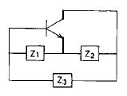
- Z1:C, Z2:C, Z3:L
- Z1:C, Z2:C, Z3:C
- Z1:L, Z2:L, Z3:L
- Z1:L, Z2:L, Z3:C
(정답률: 73%)
2과목: 전자계산기일반
16. 전자계산기를 세대별로 분류할때 진공관을 사용하던 것은 몇세대라 하는가?
- 제 1세대
- 제 4세대
- 제 3세대
- 제 2세대
(정답률: 50%)
17. 오퍼레이터(operater)가 전자계산기와 메시지(message)를 주고 받을때 이용하는 장치는?
- 카드 판독장치
- 문자 표시장치
- 광학 문자 판독장치
- 콘솔 장치
(정답률: 알수없음)
18. 2진법 데이타 (0010110)을 16진법 데이타로 바꾸어 놓은 것 중 올바른 것은?
- 1A
- 26
- 16
- 2A
(정답률: 53%)
19. 다음 보조기억장치 중 가장 속도가 빠른 기억장치는?
- 자기 테이프 기억장치
- 카세트 테이프 기억장치
- 자기 디스크 기억장치
- 자기 드럼 기억장치
(정답률: 39%)
20. 다음 진리치표에 해당하는 논리 게이트(logic gate)는 어느 것인가?
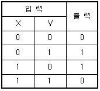
- AND
- OR
- NOR
- XOR(exclusive - OR)
(정답률: 69%)
21. 기계어와 1대 1로 작성된 프로그램은?
- SORT/MERGE
- RPG
- ASSEMBLY 어
- FORTRAN
(정답률: 알수없음)
22. 다음 순서도 기호의 설명중 맞는 것은?
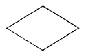
- 입·출력 표시
- 서류
- 종이카드
- 판단
(정답률: 65%)
23. 논리식
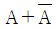
의 출력은?- 1
- 0
- A
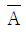
(정답률: 53%)
24. 다음중 컴퓨터의 중앙처리장치(CPU)에 관한 설명으로 적합하지 않은 것은?
- 컴퓨터의 전체를 통제,감독한다.
- 제어,연산,주기억장치로 이루어져 있다.
- 명령어들을 해석하고 데이터들을 기억장치에 이동시킨다.
- 작업수행에 대한 데이터를 입·출력하고 전송하기도 한다.
(정답률: 58%)
25. I/O장치와 주기억 장치를 연결하는 중계역할을 담당하는 부분은?
- device
- bus
- channel
- interrupt
(정답률: 59%)
26. 케이블에 젤리(Jelly)를 충진하는 주목적은?
- 심선간의 절연저항을 크게 하기 위하여
- 직매 케이블로 사용하기 위하여
- 누화 특성을 향상하기 위하여
- 방습효과를 갖기 위하여
(정답률: 34%)
27. 임피던스가 정합된 통신선로란 어떤 상태를 말하는가?
- 투과계수 σ = 0인 상태이다.
- 반사계수 m = 1인 상태이다.
- 유한장 선로의 특성을 가진다.
- 최대의 전력을 공급할수 있다.
(정답률: 58%)
28. Cable 선로의 심선구조에서 2P를 구성하는 4개의 심선이 사각형의 정점에 놓인 형태로 하여 이 4개의 심선을 하나로 꼬아 놓은 것을 한 단위로 한 것은?
- 성형 쿼드(quad)
- DM 쿼드(quad)
- 유닛트(unit)
- 단쌍(pair)
(정답률: 58%)
29. 구내통신선로설비의 전화케이블의 심선도체용으로 가장 적합한 동선은?
- 연동선
- 규동선
- 황동선
- 경동선
(정답률: 61%)
30. 시외 전화케이블에 있어서 PVC 절연은 종이절연에 비해 절연내력은 어떠한가?
- 동일하다.
- 높았다 낮았다 한다.
- PVC 절연이 낮다.
- PVC 절연이 높다.
(정답률: 40%)
3과목: 통신선로일반
31. 고층 건물내의 전화용 배관에 사용되는 것은?
- 콘크리이트관
- 경질 PVC관
- 휴움관
- 석면 시멘트관
(정답률: 79%)
32. 가공통신선이 가공강전류 전선과 45° 이하의 각도로 교차하거나 상하로 평행하는 경우 설치하는 보호시설물은?
- 보호망
- 보호선
- 절연선
- 차폐막
(정답률: 56%)
33. 전송선로를 전파하는 신호의 속도가 v[m/s]이고, 신호주파수가 f[Hz]일 때 이 신호파의 파장은?
- λ = v/f
- λ = fv
- λ = f/v
- λ = 1/fv
(정답률: 24%)
34. 시내전화선로를 보수하고자 맨홀속에 들어갔더니 별안간에 호흡장애를 유발하고 정신이 몽롱해지면 어느 경우인가?
- 극히 피로했을 경우
- 질소가스가 있을 경우
- 염소가스가 많을 경우
- 일산화탄소가스가 차있을 경우
(정답률: 82%)
35. 인력에 의해 전주를 운반할 때 다음에서 안전관리 수칙에 위배되는 사항은?
- 한쪽이 땅에 끌리지 않게 한다.
- 전주는 땅에서 높이 들수록 좋다.
- 경사진 곳을 올라갈 때는 앞쪽을 숙인다.
- 경사진 곳을 내려갈 때는 앞쪽을 높인다.
(정답률: 59%)
36. 전화케이블의 구조에서 2본의 심선을 연합해서 1개의 단위로 한것을 무엇이라 하는가?
- 성형쿼드(quad)
- 유니트(unit)
- DM퀴드(quad)
- 페어(pair)
(정답률: 65%)
37. 인공 및 수공의 축조작업시 다음의 보기에서 거푸집의 조립순서로 맞는 것은?
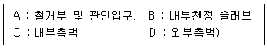
- A - B - C – D
- B - C - D - A
- C - B - A – D
- D - C - B - A
(정답률: 43%)
38. 전화케이블의 가설공사에 사용되고 있는 주름호스는 다음 어느 경우에 사용되는가?
- 전화케이블을 지하관로에 포설할 경우
- 가공케이블 상호간을 접속할 경우
- 장하코일을 연피케이블에 접속할 경우
- 전화케이블을 전주상에 가설할 경우
(정답률: 62%)
39. 전력선과 통신선의 병행시 통신선로측 유도경감 대책으로서 틀린 것은?
- 전력선과 통신선의 상호 격리
- 금속 차폐층이 있는 케이블 사용
- 흡상 변압기의 간격을 단축
- 차폐선, 유도차폐선륜등을 사용
(정답률: 42%)
40. 고층 건물내에서 전화용 배관등을 설치할 경우 수평닥트상호간의 교차점에는 무엇을 설치하는가?
- 실내단자함
- 핸드홀
- 접속함
- 연결함
(정답률: 34%)
41. 광섬유 코어(core)내에서 전반사를 계속하여 길이 방향으로 전송되려면 클래딩(cladding)의 굴절율과 어떤 관계가 있어야 하는가? (단, n1 : 코어의 굴절율, n2 : 클래딩의 굴절율)
- n1 = n2
- n1 ＜ n2
- n1 ＞ n2
- n1 = 2n2
(정답률: 54%)
42. 24 CH, 8bit용 디지탈 전송로 집선장치에서 전송로에 송출되는 전송속도는 얼마인가?
- 1.544[Mb/s]
- 3.152[Mb/s]
- 128[Kb/s]
- 256[Kb/s]
(정답률: 알수없음)
43. CATV 댁내설비에 가장 많이 이용되는 동축케이블은?
- 60C형
- 20C형
- 12C형
- 5C형
(정답률: 70%)
44. 광섬유케이블을 접속하면 접속된 심선 약 15[m] 정도를 둘둘말아 접속함내에 보관하는데 그 이유는?
- 광손실을 측정하기 위해서
- 심선길이를 맞추기 위해서
- 전파속도를 조정하기 위해서
- 임피던스를 정합시키기 위해서
(정답률: 50%)
45. 지표상에 건설된 시외가공선로의 설명으로 틀린 것은?
- 전주길이의 1/6을 땅에 묻는다.
- 직선구간에 50m마다 전주를 세운다.
- 지선의 근개각도는 90도이다.
- 적설지대에 을종풍압하중을 적용시킨다.
(정답률: 47%)
4과목: 선로설비기준
46. 정보통신부장관은 천재, 전시, 사변시 전기통신사업자에게 전기통신업무의 전부 또는 일부를 제한하거나 정지할 수 있다. 이 특권의 목적으로써 가장 적합한 것은?
- 전기통신사업의 건전한 발전을 위해
- 중요 통신의 확보를 위해
- 국가통신 비밀보호를 위해
- 전기통신설비의 건설과 보전을 위해
(정답률: 75%)
47. 기간통신사업자의 전기통신역무에 관한 요금 기타 이용조건을 무엇이라 하는가?
- 정보통신부령
- 이용규정
- 이용약관
- 기술기준
(정답률: 82%)
48. 동일한 가입구역 안에 2 이상의 전화교환국이 있는 경우 그 전화국별로 전화를 수용하는 구역을 지정한 지역을 무엇이라고 하는가?
- 준가입구역
- 수용구역
- 분담구역
- 통화구역
(정답률: 74%)
49. 전송선로에 생기는 전력유도 잡음전압의 제한치는?
- 1[mV]
- 10[mV]
- 20[mV]
- 30[mV]
(정답률: 45%)
50. 낙뢰에 의하여 이상전류가 유입될 우려가 있는 통신설비의 경우 이를 차단하기 위하여 설치하는 것은?
- 단자함
- 중계기
- 보호기
- 분기기
(정답률: 84%)
51. 전기도체 등으로 300[V] 이상을 전력을 송전하거나 배전하는 전선을 전기통신설비의 기술기준에서 무엇이라고 하는가?
- 약전류전선
- 중전류전선
- 강전류전선
- 초전류전선
(정답률: 71%)
52. 정보통신공사업의 등록기준이 아닌 것은?
- 기술능력
- 공사용 기기
- 자본금
- 사무실
(정답률: 67%)
53. 전기통신업무의 사용에 제공된 토지의 손실보상은 누구에게 청구하여야 하는가?
- 건설교통부장관
- 전기통신사업자
- 정보통신부장관
- 토지수용위원회
(정답률: 39%)
54. 전기통신의 표준화에 관한 업무를 효율적으로 추진하기 위하여 설치한 기구는?
- 한국정보통신기술협회
- 통신위원회
- 통신진흥협의회
- 형식승인심의회
(정답률: 82%)
55. 전기통신사업의 구분은?
- 기간통신사업, 별정통신사업, 부가통신사업
- 유선통신사업, 무선통신사업, 데이터통신사업
- 공중통신사업, 자가통신사업, 특정통신사업
- 일반통신사업, 전용통신사업, 대여통신사업
(정답률: 77%)
56. 선로설비의 회선 상호간, 회선과 대지 상호간의 절연저항은 얼마인가?
- DC 250[V]의 절연저항계로 측정하여 10[MΩ ]이상이어야 한다.
- DC 500[V]의 절연저항계로 측정하여 30[MΩ ]이상이어야 한다.
- DC 250[V]의 절연저항계로 측정하여 20[MΩ ]이상이어야 한다.
- DC 500[V]의 절연저항계로 측정하여 10[MΩ ]이상이어야 한다.
(정답률: 42%)
57. 전기통신설비의 건설과 보전을 위한 토지등의 일시사용기간은?
- 1개월 이내
- 3개월 이내
- 6개월 이내
- 12개월 이내
(정답률: 73%)
58. 하나의 전력을 1[mW]에 대한 대수비로 표시한 것을 무엇이라 하는가?
- 평형도
- 절대레벨
- 비트오율
- 음량정격
(정답률: 59%)
59. 전기통신기술 진흥을 위해 수립 및 시행계획에 포함되지 않는 것은?
- 정보제공규정의 승인에 관한 사항
- 전기통신기술의 연구· 개발에 관한 사항
- 전기통신기술의 표준화에 관한 사항
- 전기통신기술의 국제협력에 관한 사항
(정답률: 37%)
60. 전기통신 설비의 보전에 있어서 경제적 측면에서 규정된 서비스 레벨의 총비용 구성과 관계없는 것은?
- 투자 비용
- 시설 확장 비용
- 운용 비용
- 트래픽 손실에 대한 비용
(정답률: 50%)